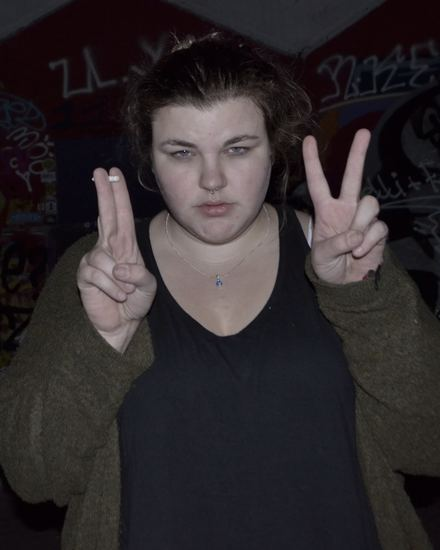
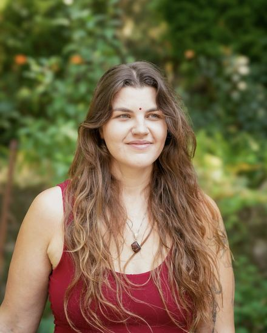
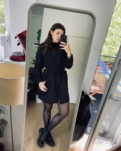
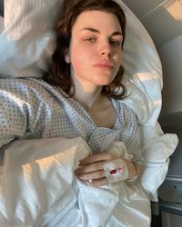
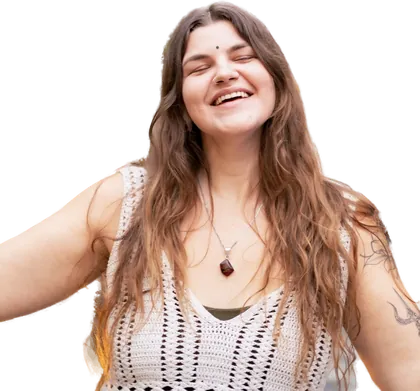
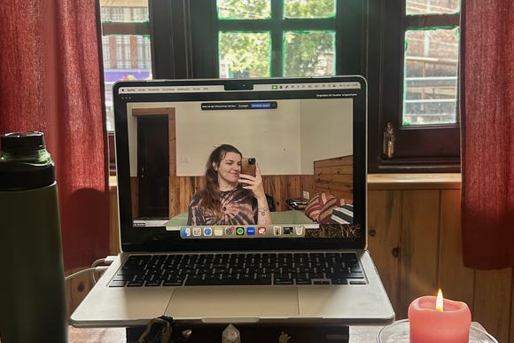
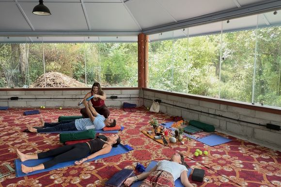
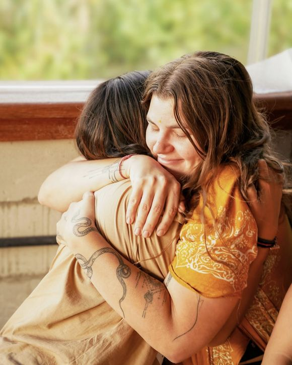
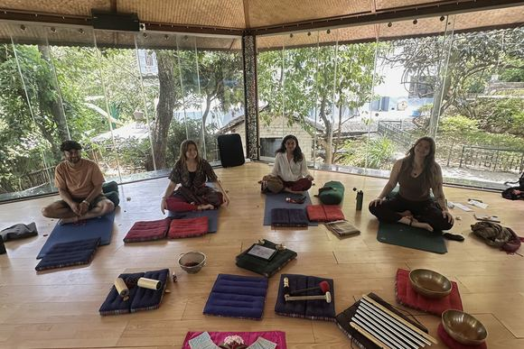

Transformation ist möglich.
Und die Grundlage dafür: eine gesunde Beziehung zu dir selbst.
Somatische Prozessbegleitung & Atemarbeit
 Spirit of Body and Breath
Lilly Stradner
Spirit of Body and Breath
Lilly Stradner
Jahrelang habe ich mich und meinen Körper gehasst. Heute weiß ich: Wir waren nie das wirkliche Problem!
Genau deshalb begleite ich Menschen hin zu einer liebevollen Beziehung zu sich selbst und ihrem Körper ~ damit von hier aus alles andere wachsen kann.
Erfahre mehr über mich und meine Arbeit Oder lern mich unverbindlich kennen
01 — Über mich
Stell dir vor, du wächst in einer augenscheinlich „ganz normalen Familie“ auf.
Haus, Garten, Schule, Urlaub.
Doch trotzdem hasst du dich selbst abgrundtief, seitdem du denken kannst.
Du kannst nicht anders, als ständig zu essen, schämst dich für deinen Körper und verstehst einfach nicht, warum du so viel schlimmer bist als alle anderen.
That’s the story of my life.
Trotz einer eigentlich schönen Kindheit hat schon immer „irgendetwas mit mir nicht gestimmt“. Fressanfälle. Mein Gewicht. Die Angst, aufzufallen. Depressive Phasen und Zeiten, in denen ich mir selbst weh tue und nicht mehr leben will. Drogen, emotionale Abhängigkeiten und der Zwang, mich selbst immer weiter zu optimieren.
Das alles unter dem Deckmantel einer Essstörung, für die ich mich selbst verurteile.
„Wenn ich es endlich hinkriegen würde, diszipliniert und dünn zu sein, dann wäre alles gut.“
Eine der größten Lügen, die uns unsere Gesellschaft erzählt und auch ich mir lange erzählt habe.
(Ich habe über 50 kg abgenommen und war trotzdem nicht glücklich. ;) )
Heute weiß ich: Ob Betäubung, Kontrolle, Rückzug oder Ablenkung: Egal zu welcher Überlebensstrategie wir greifen, es sind intelligente Mechanismen von unserem System, die uns helfen, mit Dingen klarzukommen.
-
-
-

-

All das bedeutet nicht, dass mit uns etwas nicht stimmt, sondern dass wir hinschauen dürfen, was dahinter eigentlich unsere Aufmerksamkeit braucht.
Das musste ich allerdings erst schmerzhaft lernen.
Mein Kartenhaus bricht in sich zusammen, als mein Papa, die einzig wirklich sichere Person in meinem Leben, viel zu früh aus dem Nichts stirbt. †
Doch gleichzeitig bricht in diesem schlimmsten Schmerz auch etwas auf.
Tief unter dieser Trauer beginnt ein Anteil zu rufen: „Hier steckt noch mehr dahinter.“
Zunächst ganz leise, doch ich folge ihm.
Ich beginne, mich selbst kennenzulernen, zu spüren. Reise. Coachings, Energiearbeit, eine Yogaausbildung. Mein erstes Praktikum im Coaching-Bereich.
Vieles ändert sich zum Positiven. Schnell sogar.
Doch gleichzeitig spüre ich: Irgendetwas sitzt da noch. Und ich verurteile mich immer noch dafür.
„Ich weiß, ich bin gut genug, nur warum fühle ich es nicht?!“
Deshalb entscheide ich mich für eine Ausbildung im Bereich Trauma, Nervensystem und somatische Arbeit.
Und tatsächlich: Nach fünf Wochen täglicher somatischer Arbeit mit mir selbst offenbart sich mir das letzte große Puzzleteil.
Nach über 20 Jahren erinnere ich mich daran, dass ein Mann aus dem Umfeld meiner Familie mich im Alter von fünf Jahren vergewaltigt hat.
Zunächst Schock, Zweifel, Unsicherheit.
Und dennoch die tiefe Gewissheit: Jetzt macht auf einmal alles Sinn.
Ich nehme mich der vermutlich lebenslangen Aufgabe an, dies aufzuarbeiten. Suche mir erneut Unterstützung. Lerne, darüber zu sprechen. Mich zu zeigen. Zu fühlen, was da ist, ohne wegzulaufen.
Mit Erfolg. Heute habe ich selbst in schwierigen Zeiten tief verinnerlicht, dass ich liebevoll zu mir selbst bleiben darf.
Und mit dieser liebevollen Beziehung zu mir selbst verstehe ich, dass mir die Vergewaltigung vor allem eins genommen hat: echte Verbindung zu anderen Menschen.
Wahrhaftig gesehen zu werden, war lebensgefährlich für mich geworden.
Dem stelle ich mich in meinem Breathwork Teacher Training und lerne:
Gesehen werden kann heute sicher sein.
Mit dieser Arbeit tauche ich noch tiefer, arbeite mit dem Kriegstrauma meiner Oma, das ich in mir trage, und lege Schichten ab, die älter als meine eigene Geschichte sind.
Du siehst, neben verschiedenen Ausbildungen prägt mich vor allem meine eigene Erfahrung.
Und genau darum geht es auch in meiner Arbeit: Vor allem begleite und halte ich Raum für deine Selbsterfahrung.
Und damit vorab eins klar ist: Du musst nichts Schlimmes erlebt haben, um hier richtig zu sein. Es reicht, wenn du mit etwas unzufrieden bist und es verändern willst.
„Nicht schlimm genug“ gibt es bei mir nicht, bzw. das schauen wir uns dann liebevoll in der gemeinsamen Arbeit an. ;)
02 — Meine Arbeit
Stell dir vor, du machst dir an einem aufregenden Tag zwischendurch dein Lieblingsgetränk und setzt dich für einen Moment gemütlich hin.
Eine innere Stimme sagt dir, dafür hättest du keine Zeit. Du umarmst sie gedanklich, schließt deine Augen und schenkst dir einen tiefen Atemzug. Mhhhhhhhhh.
Du spürst eine sprudelnde Energie in deinem Körper, fühlst dich lebendig, aber dennoch sicher. Es ist aufregend und manchmal herausfordernd, für die Dinge loszugehen, die dir wichtig sind. Doch gleichzeitig bist du tief im Vertrauen, dass du dich selbst liebevoll durch die Höhen und Tiefen deines Lebens begleiten kannst. Du bist stolz und dankbar. Und du freust dich auf dein Date mit dir selbst, das du dir für morgen eingeplant hast …
Genau das ist das Ziel meiner Arbeit: Dass du dich selbst, deinen Körper, dein Nervensystem, deine Emotionen und Energien kennst und spürst, was du brauchst. Dass du dich sicher in dir fühlst, dir selbst vertraust und weißt, dass du dir aus einer liebevollen Beziehung zu dir dein Leben kreierst.
Wie machen wir das?
Meine Arbeit ist kein klassisches Coaching, sondern eine Prozessbegleitung. Das bedeutet, in unseren gemeinsamen Räumen geht es darum, Referenzerfahrungen für dein System zu kreieren, durch die du lernst, dass heute neue Wege möglich sind.
Diese neuen Wege gilt es dann in realistischen Schritten auch im Alltag zu üben und umzusetzen, sodass du dir Stück für Stück eine neue Realität schaffen kannst.
Alles darf da sein und gefühlt werden, sodass es sich integrieren kann und seine unterbewusste Macht verliert.
Du bist genauso richtig, wie du bist, und von dort aus forschen wir gemeinsam, was es braucht. Ich halte dir den Raum, teile mein Wissen und meine Erfahrung, wir begegnen uns auf Augenhöhe.
Ich arbeite trauma-informiert und gerade im 1:1 sehr individuell. Wir schauen, was du in deiner Lebensrealität brauchst.
Grundsätzlich basiert meine Methode „Spirit of Body and Breath“ aber auf folgenden drei ineinandergreifenden Bereichen:
Spirit of Body and Breath
Tippe auf ein Feld, um zu erfahren, worum es darin geht.
Wähle ein Feld im Modell.
1
Körper & Nervensystem
Das Fundament besteht darin, überhaupt erstmal wieder eine Verbindung zu deinem Körper aufzubauen. Du lernst ihn wieder zu spüren und zuzuhören. Außerdem geht es darum, dein Nervensystem zu verstehen. Du lernst zu erkennen, wo du mit deinem Nervensystem gerade stehst, und dich darin zu navigieren. Dabei geht es nicht darum, immer ruhig und reguliert zu sein, sondern dir das zu geben, was du gerade wirklich brauchst. Dadurch brauchen wir es mit der Zeit immer weniger, zu ungesunden Mechanismen zu greifen.
1 + 2
Frieden mit deinen Themen
Ein tiefes Vertrauen: Du kannst dich und deine Themen halten. Du trägst niemals Schuld, aber übernimmst die Verantwortung.
2
Somatische Aufarbeitung
Hier schauen wir uns deine Geschichte und Themen an. Deine Verletzungen und Prägungen aus der Kindheit, deine heutigen Trigger, Bindungsmuster & Co. Wir lernen, alles zu spüren, zu halten und zu integrieren, sodass es seine unterbewusste Macht verliert. Ich arbeite hier vor allem gerne mit somatischer Arbeit und Atemarbeit. Darunter fällt die Arbeit mit Anteilen, Schatten, Chakren, unterdrückten Emotionen, deiner Stimme und vielem mehr. Immer entsprechend deiner Wünsche und Bedürfnisse.
2 + 3
Deine Aufgabe hier
In unseren Erfahrungen und Schmerzen liegen oft auch Leidenschaft und Potenzial. Was willst du wirklich aus deinem Leben machen?
3
Systembewusstsein
Wir sind eben nicht einfach nur wir, sondern Wesen, die ihr Leben lang in Systemen geprägt werden. Familiensysteme, Schulsysteme, Arbeitskontexte, gesellschaftliche Systeme wie Kapitalismus, Patriarchat, Neokolonialismus und viele mehr. All diese wirken tagtäglich auf uns und werden das auch weiterhin tun. Nur wenn wir lernen, dies zu erkennen, sind wir dem nicht mehr machtlos ausgeliefert.
1 + 3
Du in unserer heutigen Welt
Anstatt einfach nur zu funktionieren, lerne dich in den Systemen, die dich prägen, zu halten und zu navigieren.
1 + 2 + 3
Sicherheit & Selbstwert
Du in deiner unantastbaren Verbindung zu dir. Auch wenn nicht immer alles Friede, Freude, Eierkuchen sein wird: Du weißt, du kannst dich liebevoll halten und begleiten.
In meiner Arbeit liegt der Fokus darauf, vom Verstand in die Verkörperung zu kommen.
Wir wollen das, was wir oft schon wissen, eben auch wirklich im Hier und Jetzt lernen zu leben. Dennoch nehmen wir unseren wundervollen Kopf natürlich immer mit, eben so wie das, was sich manchmal jenseits von Worten zeigt, wenn du dafür offen bist.
Für die Nerds Somatische Arbeit & Breathwork erklärt
Hier erkläre ich bald ausführlicher, was im Körper passiert, wenn wir somatisch arbeiten und atmen. Text folgt.
Woher ich komme
Und falls du wissen magst, welche Ausbildungen mich neben meiner eigenen Geschichte geprägt haben:
- Conscious Connected Breathwork Facilitator
- Trauma-informierte Embodiment-Coach
- 200 Stunden Multistyle-Yoga-Ausbildung, dazu Yin Yoga
- Reiki Grad 1, 2a und 2b
- Studium der Internationalen Beziehungen

03 — Online-Begleitungen
Meine Online-Begleitungen erstrecken sich über einen längeren Zeitraum und richten sich an Menschen, die wirklich etwas verändern wollen.
Es geht darum umzusetzen, auszuprobieren, zu fühlen, dich selbst zu erfahren.
Meine Arbeit ist nicht für dich, wenn du dich berieseln lassen möchtest, auf der Suche nach einem „Quick Fix“ bist oder gerettet werden möchtest.
„Ich will Verantwortung für mich und meine Themen übernehmen und wünsche mir dabei einen gehaltenen Raum.“
03a — 1:1-Prozessbegleitung
Meine 1:1-Prozessbegleitung ist perfekt für dich, wenn du dich entscheidest, dich selbst endlich wirklich ernst zu nehmen.
In regelmäßigen Online-Sessions via Zoom gehen wir anhand meiner Methode „Spirit of Body and Breath“ deine Themen ganzheitlich an. (siehe hier)
Zwischen den Sessions bin ich via WhatsApp für dich da und wir checken regelmäßig miteinander ein.
Es gibt zusätzliche Materialien wie Audiotrainings, aufgezeichnete Sessions, Workbooks und andere Aufgaben. Wichtig ist hier: Es gibt kein allgemeines Schema X, das du durchläufst. Wir erforschen gemeinsam, was du genau brauchst und in welchem Tempo.
Mein Anspruch an mich selbst ist es, mit dir einen Raum zu kreieren, in dem du dich wahrhaftig gesehen fühlst und in dem ausnahmslos alles da sein darf. Genau hier liegt oft schon ein riesiger Teil der Heilung.

Klingt spannend? Hier kannst du dir einen 10–20 Minuten unverbindlichen Kennenlerncall buchen, in dem wir einmal kurz per Telefon einchecken, ob eine Zusammenarbeit in Frage kommt.
Wenn die Chemie zwischen uns stimmt, vereinbaren wir einen zweiten Call via Zoom, in dem wir uns dann nochmal ganz in Ruhe ca. 1 Stunde Zeit nehmen, alle Fragen klären & Co. Auch völlig unverbindlich und kostenfrei.

03b — Gruppenmentoring
Mein Signature-Programm „Verkörpert Unperfekt“ ist eine Reise …
Genauere Beschreibung folgt.
Der Zeitpunkt vom nächsten Start steht noch nicht fest, richtet sich aber auch nach euren Wünschen. Hier kannst du dich auf die Warteliste eintragen und mir etwaige Wünsche nennen. Ich melde mich dann mit einem besonderen Angebot zuerst bei dir, wenn es in die nächste Runde geht.
04 — Online-Community
Kostenlos und unverbindlich
Heilung geschieht nicht allein.
So lange habe ich es alleine versucht, mir eingeredet, ich bräuchte niemanden, alleine geht es mir besser. Dabei war ich tief im Inneren einsam und Verbindung für mich einfach nicht sicher.
Heute weiß ich: Verbindung kann wieder sicher werden und ist kein Extra, sondern Teil der Arbeit.
Deshalb baue ich eine Community auf, in der wir uns begegnen und gemeinsam an der Arbeit dranbleiben. Sie entsteht gerade, heißt, du kannst von Anfang an mitgestalten.
Los geht’s ganz niederschwellig über WhatsApp: Wir stimmen dort Themen und Termine ab, und je nach Nachfrage entstehen Online-Breathwork- und Somatics-Sessions mit optionalen Sharings.
Kein Spam! Du landest erstmal nur im Ankündigungskanal, dort schreibe nur ich. Ob du den Austausch-Kanälen beitrittst, entscheidest du selbst. Die Community ist kostenfrei und unverbindlich. Du zahlst nur für Sessions, zu denen du dich anmeldest, und kannst jederzeit selbstständig austreten.
Ich bin gespannt, wohin das Ganze wächst.

05 — Offline-Angebote & Kooperationen
Ob im 1:1 oder in der Gruppe: Offline zu arbeiten, liebe ich am meisten.

Im selben Raum zu sitzen, gemeinsam zu atmen, sich wirklich zu begegnen. Mit somatischer Arbeit und Breathwork entstehen dabei tiefe, trauma-informierte Erfahrungsräume — einzigartige Sessions und Rituale, die unter die Haut gehen.
Ich bin viel unterwegs, aber immer offen für Anfragen: im Winter meist in Indien und Südostasien, im Sommer in Deutschland (vor allem NRW & Berlin) und Europa.
Ich biete offline Folgendes an:
- Offline-1:1-Sessions (gerne auch in Verbindung mit Online-Begleitungen)
- Offline-Gruppensessions zu verschiedenen Themen
- Frauenkreise
- Female Rage Sessions
Hast du Interesse an einer Offline-Session oder einer Kooperation?
Wenn es gerade akut ist
Meine Arbeit ersetzt keine Psychotherapie und keine ärztliche Behandlung. Wenn es dir gerade sehr schlecht geht, wende dich bitte an Menschen, die rund um die Uhr für dich da sind:
- Telefonseelsorge — 0800 111 0 111 und 0800 111 0 222, kostenlos, Tag und Nacht
- Bundesweites Info-Telefon Depression — 0800 33 44 533
- Essstörungen — Beratung der BZgA: 0221 89 20 411
- Im Notfall: 112 oder die nächste psychiatrische Klinik
Kontakt & Kennenlerncall
Lern mich unverbindlich kennen.
Ob Kennenlerncall, Warteliste, Community oder eine Offline-Session — sag mir einfach, worum es geht. Ich lese jede Nachricht selbst und melde mich innerhalb von zwei Werktagen bei dir.